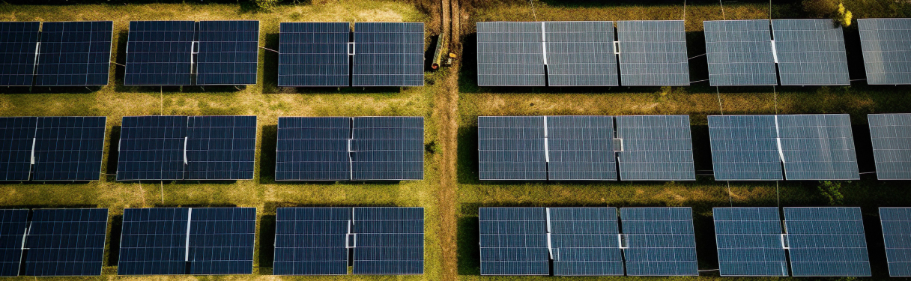

The Role of Artificial Intelligence in Optimizing Solar Panel Efficiency
In the pursuit of maximizing renewable energy output, the integration of artificial intelligence (AI) has emerged as a game-changing tool, particularly in the realm of solar energy. From enhancing panel performance to optimizing energy production, AI technologies are revolutionizing the way solar systems operate and perform.
At the heart of AI-driven solar optimization lies the ability to analyze vast amounts of data in real-time, allowing for precise adjustments and predictions. Through machine learning algorithms, AI can continuously monitor factors such as weather patterns, panel orientation, shading, and even soiling levels to identify opportunities for efficiency improvements.
One of the primary applications of AI in solar panel optimization is predictive maintenance. By analyzing historical data and identifying patterns, AI algorithms can predict potential failures or degradation in solar panels before they occur, allowing for proactive maintenance and minimizing downtime. This predictive approach not only improves system reliability but also extends the lifespan of solar assets, ultimately reducing operational costs.
Moreover, AI-powered control systems enable dynamic adjustments to solar panel parameters in response to changing environmental conditions. For example, AI algorithms can optimize the tilt and orientation of solar panels throughout the day to maximize sunlight exposure and energy generation. Additionally, AI-enabled inverters can dynamically adjust power output to match energy demand, further enhancing system efficiency and grid stability.
Beyond individual solar installations, AI is also shaping the development of virtual power plants (VPPs) and smart grids. By integrating AI algorithms into VPP platforms, operators can optimize the collective performance of distributed solar assets, balancing supply and demand in real-time and maximizing grid resilience. Similarly, AI-driven grid management systems can anticipate fluctuations in solar energy production and adjust grid operations accordingly, ensuring reliable and stable power delivery.
As the capabilities of AI continue to evolve, so too will its impact on solar panel efficiency and energy optimization. With ongoing advancements in machine learning algorithms, data analytics, and IoT connectivity, AI promises to unlock new levels of performance and sustainability in the solar energy sector. By harnessing the power of AI-driven optimization, we can accelerate the transition to a clean, renewable energy future while maximizing the potential of solar power generation.
